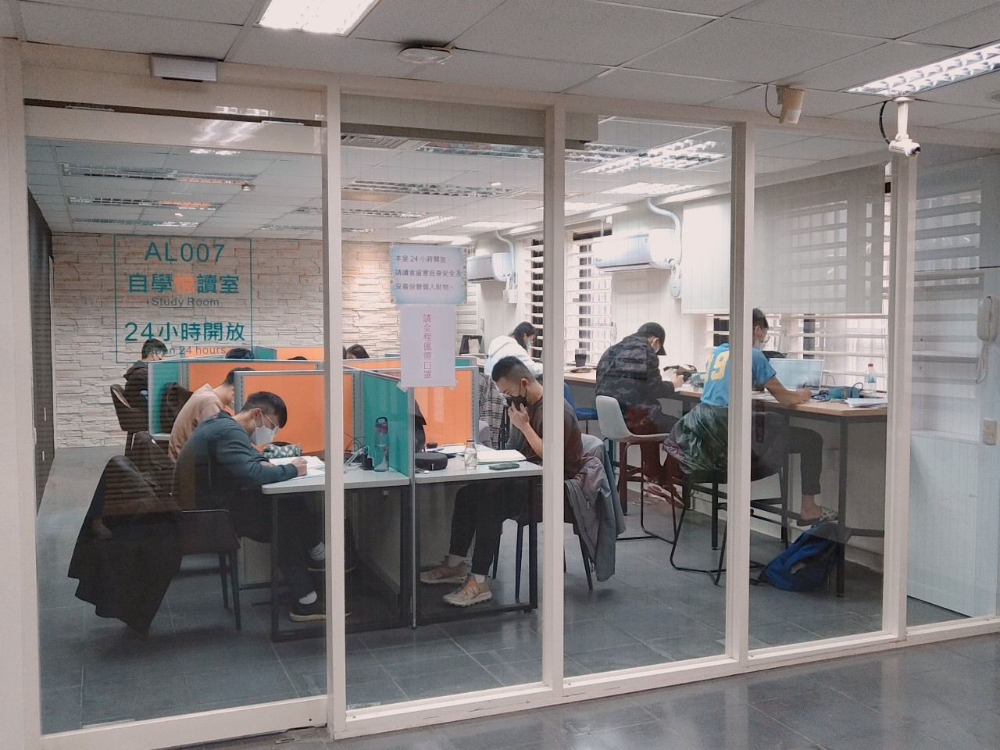

期末的壓力與溫暖
冬天是慶典與壓力的交織。盛大的校慶與園遊會為校園帶來歡樂的氣氛， 化妝晚會增添戲劇色彩，讓寒冷的冬天充滿了溫暖與活力。
期末考週來臨時，圖書館成為最溫暖的避風港。學生們埋首書堆， 為了期末考試而努力。雖然壓力大，但同學間的互相鼓勵與支持， 讓這個季節充滿了溫馨的氛圍。
這個季節，校園裡充滿了兩種截然不同的氛圍：慶典的熱鬧與學習的專注。 無論是哪一種，都充滿了人與人之間的溫暖，這是冬天最珍貴的記憶。

WINTER MEMORY
12 月 — 2 月
慶典、沉靜、團聚
冷空氣中略顯蕭瑟，但節慶帶來溫暖。
這是期末的壓力，也是溫暖歡聚的季節。
冬天是慶典與壓力的交織。盛大的校慶與園遊會為校園帶來歡樂的氣氛， 化妝晚會增添戲劇色彩，讓寒冷的冬天充滿了溫暖與活力。
期末考週來臨時，圖書館成為最溫暖的避風港。學生們埋首書堆， 為了期末考試而努力。雖然壓力大，但同學間的互相鼓勵與支持， 讓這個季節充滿了溫馨的氛圍。
這個季節，校園裡充滿了兩種截然不同的氛圍：慶典的熱鬧與學習的專注。 無論是哪一種，都充滿了人與人之間的溫暖，這是冬天最珍貴的記憶。
冬天的校園呈現出靜謐而沉靜的美感，從戶外景物到荷花池，處處都是等待與準備的氣息。
戶外景物在冬天顯得靜默，但這種靜謐中帶著一種沉靜的美感，讓人感受到時間的流轉。這是冬天特有的氛圍，也是思考與沉澱的時刻。
即使在冬天，仙丹依然開著鮮紅的花朵。南校區綠帶和行政大樓前的這些植物，四季都為校園帶來生機與色彩。
四季常開花，分布於北校區行道樹下。這些花朵在冬天依然綻放，展現出頑強的生命力，為寒冷的季節帶來溫暖的色彩。
從校慶園遊會到化妝晚會，冬天的校園充滿了慶典與歡聚的活動。
盛大的校慶活動與園遊會為校園帶來歡樂的氣氛，各系擺攤、表演，整個校園充滿了慶典的熱鬧。這是師生們共同參與的重要活動。
化妝晚會增添戲劇色彩，學生們發揮創意，用各種造型展現自我，為寒冷的冬天帶來溫暖與歡笑。這是校園最有趣的活動之一。